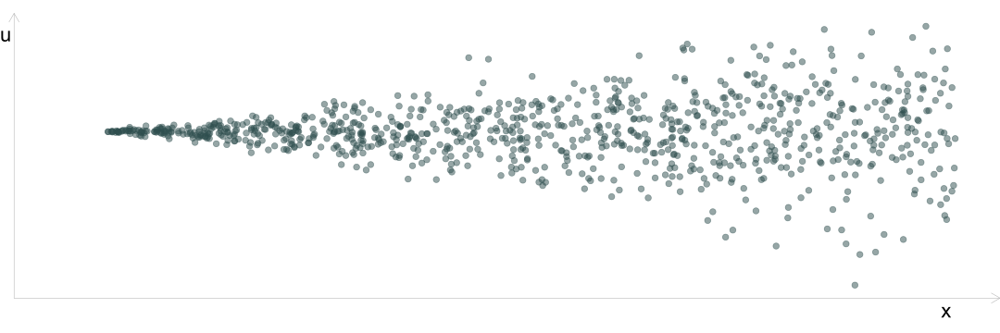
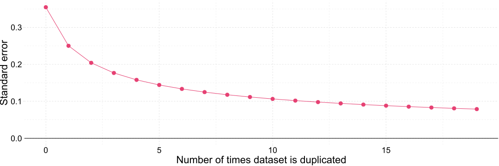
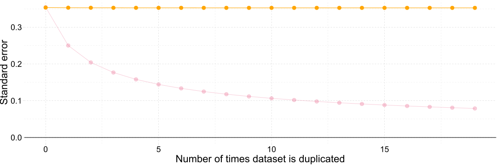

Правила поведінки при сигналі “Повітряна тривога” під час дистанційного навчання
При отриманні сигналу “Повітряна тривога” в місті Києві лекційне заняття припиняється, а студенти мають перейти до укриттів за місцем перебування. Після отримання сигналу “Відбій повітряної тривоги” лекційне заняття буде продовжено.
При отриманні сигнали “Повітряна тривога” в інших регіонах України, студенти мають від’єднатися від лекційного заняття та перейти до укриттів за місцем перебування. Після отримання сигналу “Відбій повітряної тривоги” студенти можуть повернутися до лекційного заняття.
Основні положення
Гетероскедастичність
Давайте згадаємо поточні МНК припущення
Наша вибірка (\(x_k\) та \(y_i\)) була випадковим чином відібрана з сукупності.
\(y\) є лінійною функцією\(\beta_k\) і \(u_i\).
У нашій вибірці немає ідеальної мультиколінеарності.
Незалежні змінні є екзогенними: \(\mathop{\boldsymbol{E}}\left[ u \middle| X \right] = 0 \left(\implies \mathop{\boldsymbol{E}}\left[ u \right] = 0\right)\).
Збурення мають постійну дисперсію\(\sigma^2\) і нульову коваріацію, тобто,
\(\mathop{\text{Cov}} \left( u_i, \, u_j \middle| X \right) = \mathop{\boldsymbol{E}}\left[ u_i u_j \middle| X \right] = 0\) для \(i\neq j\)
Зокрема, ми зосередимося на припущенні постійної дисперсії (також відомому як гомоскедастичність).
Порушення цього припущення:
Гетероскедастичність:\(\mathop{\text{Var}} \left( u_i \right) = \sigma^2_i\) і \(\sigma^2_i \neq \sigma^2_j\) для деяких \(i\neq j\) .
Іншими словами: наші збурення мають різну дисперсію.
Гетероскедастичність
Класичний приклад гетероскедастичності: воронка
Дисперсія \(u\) зростає разом із \(x\)

Гетероскедастичність
Інший приклад гетероскедастичності: (подвійна воронка?)
Дисперсія \(u\) зростає на крайніх значеннях \(x\)
Гетероскедастичність
Інший приклад гетероскедастичності
Різні групові дисперсії \(u\)
Гетероскедастичність
Гетероскедастичність присутня, коли дисперсія \(u\) змінюється з будь-якою комбінацією наших пояснювальних змінних \(x_1\) до \(x_k\) (далі: \(X\)).
Це дуже поширене явище на практиці.
Чому вона нам важлива: Гетероскедастичність показує нам, як незначні порушення наших припущень можуть вплинути на ефективність МНК.
Наслідки
Отже, які наслідки гетероскедастичності? Зміщення? Неефективність?
По-перше, давайте перевіримо, чи це має наслідки для незміщенності МНК
Нагадування1: незміщенність МНК означає \(\mathop{\boldsymbol{E}}\left[ \hat{\beta}_k \middle| X \right] = \beta_k\) для всіх \(k\).
Нагадування2: раніше ми показували \(\hat{\beta}_1 = \dfrac{\sum_i\left(y_i-\overline{y}\right)\left(x_i-\overline{x}\right)}{\sum_i\left(x_i -\overline{x}\right)^2}\)
Ефективність і інтерпретованість МНК не витримують гетероскедастичності.
За наявності гетероскедастичності МНК не є більше найефективнішим (найкращий) лінійним незміщеним оцінювачем.
Було б більш інформативним (ефективнішим) зважити спостереження обернено до їхньої дисперсії \(u_i\).
Низька вага спостереженням з високою дисперсією \(u_i\).
Висока вага спостереженням з низькою дисперсією \(u_i\).
Тепер у вас є ідея зваженого методу найменших квадратів (ЗМНК, WLS)
Наслідки: інтерпретованість
За наявності гетероскедастичності стандартні похибки МНК є зміщенними .
Неправильні довірчі інтервали
Проблеми для перевірки гіпотез (як \(t\), так і \(F\) тести)
Рішення
Тести для визначення наявності гетероскедастичності.
Засоби захисту для (1) ефективності та (2) інтерпретованісті
Тестування гетероскедастичності
Хоча у нас можливо є рішення для гетероскедастичності, ефективність наших оцінювачів залежить від наявності гетероскедастичності.
Тест Гольдфельда-Квандта
Тест Уайта
Тест Бройша — Пагана
Кожен із цих тестів зосереджується на тому факті, що ми можемо використовувати залишки МНК\(\color{#e64173}{e_i}\)для оцінки генеральної сукупності\(\color{#e64173}{u_i}\).
Тест Гольдфельда-Квандта
Тест Гольдфельда-Квандта
Зосереджується на конкретному типі гетероскедастичності: чи відрізняється дисперсія \(u_i\)між двома групами.
Пам’ятаєте, як ми використовували наші залишки для оцінки \(\sigma^2\)?
Ми використаємо цю саму ідею, щоб визначити, чи є докази того, що наші дві групи відрізняються дисперсіями своїх збурень, фактично порівнюючи \(s^2_1\) і \(s^2_2\) від наших двох груп.
Тест Гольдфельда-Квандта
Алгоритм
Впорядкування спостережень за \(x\)
Розділіть дані на дві групи розміром n⭑
G1: перша третина
G2: остання третина
Побудуйте окремі регресії \(y\) від \(x\) для G1 і G2
\(\therefore\) Нам не вдається відхилити H0: \(\sigma^2_1 = \sigma^2_2\), хоча гетероскедастичність очевидно присутня.
Тест Уайта
Тест Уайта
Бройш і Паган (1981) намагалися вирішити цю проблему конкретної функціональної форми гетероскедастичності.
Регресія \(e_i^2\) від \(X = \left[ 1,\, x_1,\, x_2,\, \ldots,\, x_k \right]\) і перевірка значущості.
Дозволяє даним показати, чи або як дисперсія \(u_i\) корелює з \(X\).
Якщо \(\sigma_i^2\) корелює з \(X\), то ми маємо гетероскедастичність.
Однак ми насправді хочемо знати, чи
\[\sigma_1^2 = \sigma_2^2 = \cdots = \sigma_n^2\]
Тест Уайта
Для досягнення цієї мети Гел Уайт скористався тим фактом, що ми можемо замінити вимогу гомоскедастичності слабшим припущенням:
Старе припущення:\(\mathop{\text{Var}} \left( u_i \middle| X \right) = \sigma^2\)
Нове припущення:\(u^2\)некорельовані з пояснювальними змінними (тобто, \(x_j\) для всіх \(j\)), їхніми квадратами (тобто, \(x_j^2\)), а також взаємодії першого ступеня (тобто, \(x_j x_h\)).
Це нове припущення легше перевірити (підказка: регресія).
Алгоритм тесту Уайта
1. Регресія y на x1, x2, …, xk. Зберегти залишки e.
2. Регресія квадратів залишків для всіх пояснювальних змінних, їхніх квадратів і взаємодій.
\(k\) (для нашого \(\chi_k^2\)) дорівнює кількості оцінених параметрів у наведеній вище регресії (\(\alpha_j\)), за винятком \(\left( \alpha_0 \right)\).
# Завантаження пакетівlibrary(pacman)p_load(tidyverse, Ecdat)# Відбір та перейменування змінних, створення нового набору данихtest_df <-select(Caschool, test_score = testscr, ratio = str, income = avginc)# Формат тібблtest_df <-as_tibble(test_df)# Перші 2 рядкиhead(test_df, 2)
# A tibble: 2 × 3
test_score ratio income
<dbl> <dbl> <dbl>
1 691. 17.9 22.7
2 661. 21.5 9.82
# Завантаження пакетівimport pandas as pdfrom statsmodels.datasets import get_rdataset# Завантаження данихcaschool = get_rdataset("Caschool", "Ecdat")# Відбір та перейменування зміннихtest_df = caschool.data[["testscr", "str", "avginc"]]test_df.columns = ["test_score", "ratio", "income"]# Перші 2 рядкиtest_df.head(2)
test_score ratio income
0 690.799988 17.889910 22.690001
1 661.200012 21.524664 9.824000
# Впорядковуємо даніtest_df =arrange(test_df, income)# Переоцінюємо модель для останніх і перших 158 спостереженьest_model1 =lm(test_score ~ ratio + income, data =tail(test_df, 158))est_model2 =lm(test_score ~ ratio + income, data =head(test_df, 158))
# Впорядковуємо даніtest_df = test_df.sort_values("income")# Переоцінюємо модель для останніх і перших 158 спостереженьest_model1 = ols("test_score ~ ratio + income", data = test_df.tail(158)).fit()est_model2 = ols("test_score ~ ratio + income", data = test_df.head(158)).fit()
Тестування гетероскедастичності: G-Q
income виглядає потенційно гетероскедастичним; давайте перевіримо через Goldfeld-Quandt.
# Впорядковуємо даніtest_df =arrange(test_df, income)# Переоцінюємо модель для останніх і перших 158 спостереженьest_model1 =lm(test_score ~ ratio + income, data =tail(test_df, 158))est_model2 =lm(test_score ~ ratio + income, data =head(test_df, 158))# Беремо залишки від кожної регресіїe_model1 =residuals(est_model1)e_model2 =residuals(est_model2)
# Впорядковуємо даніtest_df = test_df.sort_values("income")# Переоцінюємо модель для останніх і перших 158 спостереженьest_model1 = ols("test_score ~ ratio + income", data = test_df.tail(158)).fit()est_model2 = ols("test_score ~ ratio + income", data = test_df.head(158)).fit()# Беремо залишки від кожної регресіїe_model1 = est_model1.reside_model2 = est_model2.resid
Тестування гетероскедастичності: G-Q
income виглядає потенційно гетероскедастичним; давайте перевіримо через Goldfeld-Quandt.
# Впорядковуємо даніtest_df =arrange(test_df, income)# Переоцінюємо модель для останніх і перших 158 спостереженьest_model1 =lm(test_score ~ ratio + income, data =tail(test_df, 158))est_model2 =lm(test_score ~ ratio + income, data =head(test_df, 158))# Розраховуємо SSE для кожної регресіїsse_model1 =sum(e_model1^2)sse_model1
[1] 19305.01
sse_model2 =sum(e_model2^2)sse_model2
[1] 29537.83
# Впорядковуємо даніtest_df = test_df.sort_values("income")# Переоцінюємо модель для останніх і перших 158 спостереженьest_model1 = ols("test_score ~ ratio + income", data = test_df.tail(158)).fit()est_model2 = ols("test_score ~ ratio + income", data = test_df.head(158)).fit()# Розраховуємо SSE для кожної регресіїsse_model1 = (e_model1**2).sum()sse_model1
Висновок: Є статистично значущі докази того, що \(\sigma_1^2 \neq \sigma_2^2\). Таким чином, ми знаходимо статистично значущі докази гетероскедастичності (на 5-відсотковому рівні значущості).
# Модель з квадратами і взаємодіями white_model =lm(I(e^2) ~ ratio + income +I(ratio^2) +I(income^2) + ratio:income,data = test_df)# R-squared(white_r2 =summary(white_model)$r.squared)
[1] 0.07332222
# Модель з квадратами і взаємодіямиwhite_model = ols("I(e**2) ~ ratio + income + I(ratio**2) + I(income**2) + ratio:income", data = test_df).fit()# R-squaredwhite_r2 = white_model.rsquaredwhite_r2
# Модель з квадратами і взаємодіями white_model =lm(I(e^2) ~ ratio + income +I(ratio^2) +I(income^2) + ratio:income,data = test_df)# R-squaredwhite_r2 =summary(white_model)$r.squared# White test statistic(white_stat =420* white_r2)
[1] 30.79533
# Модель з квадратами і взаємодіямиwhite_model = ols("I(e**2) ~ ratio + income + I(ratio**2) + I(income**2) + ratio:income", data = test_df).fit()# R-squaredwhite_r2 = white_model.rsquared# White test statisticwhite_stat =420* white_r2white_stat
30.79533249979561
Тестування гетероскедастичності: Уайт
Крок 4: Обчисліть p-значення (де \(\text{LM} \overset{d}{\sim} \chi_k^2\)); тут \(k=5\)
# Модель з квадратами і взаємодіями white_model =lm(I(e^2) ~ ratio + income +I(ratio^2) +I(income^2) + ratio:income,data = test_df)# R-squaredwhite_r2 =summary(white_model)$r.squared# White test statisticwhite_stat =420* white_r2# p-valuepchisq(q = white_stat, df =5, lower.tail = F)
[1] 1.028039e-05
# Модель з квадратами і взаємодіямиwhite_model = ols("I(e**2) ~ ratio + income + I(ratio**2) + I(income**2) + ratio:income", data = test_df).fit()# R-squaredwhite_r2 = white_model.rsquared# White test statisticwhite_stat =420* white_r2# p-valuefrom scipy.stats import chi2chi2.sf(white_stat, 5)
Як і раніше, ми трансформуємо нашу гетероскедастичну модель у гомоскедастичну модель. Цього разу ми ділимо дані кожного спостереження1 на \(\sqrt{h(x_i)}\).
\(R_e^2\approx0.029\) і тестова статистика \(\widehat{\text{LM}} = n\times R_e^2 \approx 12.2\).
H0\(\text{LM}\) розподілена як \(\chi_5^2\)\(\implies\)p-value \(\approx\) 0.033.
∴ Відхиляємо H0Висновок: Існують статистично значущі докази гетероскедастичності на п’ятивідсотковому рівні.
Приклад: Специфікація моделі
Гаразд, ми спробували скорегувати нашу специфікацію, але все ще є докази гетероскедастичності.
Далі: Загалом, ви звернетеся до стійких до гетероскедастичності стандартних помилок.
OLS все ще неупереджений для коефіцієнтів (\(\beta_j\)’)
Стійкі до гетероскедастичності стандартні помилки є незміщеними для стандартних помилок\(\hat{\beta}_j\), тобто, \(\sqrt{\mathop{\text{Var}} \left( \hat{\beta}_j \right)}\).
2. Оцініть het.-robust standard errors за допомогою опції coeftest() з lmtest + vcovHC() з sandwich
library(lmtest)library(sandwich)coeftest(test_reg, vcov =vcovHC(test_reg, type ="HC0"))[, 1:4] %>%as_tibble() %>% knitr::kable()
Estimate
Std. Error
t value
Pr(>|t|)
638.7291545
7.2751116
87.796476
0.0000000
-0.6487401
0.3520761
-1.842613
0.0660952
1.8391122
0.1143225
16.087048
0.0000000
2. Оцініть het.-robust standard errors за допомогою cov_type = 'HC0'
# Het.-robust standard errors with 'cov_type = 'HC3''test_reg.get_robustcov_results(cov_type ="HC0").summary().tables[1]
coef
std err
t
P>|t|
[0.025
0.975]
Intercept
638.7292
7.275
87.796
0.000
624.429
653.030
ratio
-0.6487
0.352
-1.843
0.066
-1.341
0.043
income
1.8391
0.114
16.087
0.000
1.614
2.064
Приклад: WLS
Приклад: WLS
Ми згадували, що WLS часто неможливий — нам потрібно знати функціональну форму гетероскедастичності — або
A. \(\sigma_i^2\)
або
B. \(h(x_i)\), де \(\sigma_i^2 = \sigma^2 h(x_i)\)
Є випадки, коли ми можемо знати \(h(x_i)\).
Приклад: WLS
Уявіть, що окремі спостереження в генеральній сукупності мають гомоскедастичні розлади.
Однак замість того, щоб спостерігати за окремими даними, ми спостерігаємо (у даних) середні значення для груп (наприклад, міст, округів, шкільних округів).
Якщо ці групи мають різні розміри, тоді наш набір даних буде гетероскедастичним.
Нагадуємо: Дисперсія вибіркового середнього залежить від розміру вибірки, \[ \mathop{\text{Var}} \left( \overline{x} \right) = \dfrac{\sigma_x^2}{n} \]
Приклад: Наші дані шкільного тестування усереднені на рівні школи.
Приклад: WLS
Приклад: Наші дані шкільного тестування усереднені на рівні школи.
Якщо окремі учні мають гомоскедастичні порушення, у школах будуть гетероскедастичні порушення, тобто,
Ігнорування цієї кореляції може спричинити великі проблеми у вашому висновку.
Інтуїція
Чому ігнорування такої кореляції призводить до проблем?
Помилкова точність: ми можемо стати «надто впевненими» у своїх знаннях.
Екстремальний приклад: якщо дублювати свій набір даних (складати його поверх самого себе), звичайні стандартні помилки OLS зменшуватимуться кожного разу, коли ви дублюватимете набір даних.
Вплив дублювання наших даних на стандартні помилки МНК параметра ratio.

Виправляємо наші стандартні помилки (кореляція спостережень).

Приклади
«Реальні» приклади, коли збурення можуть корелювати:
Учні в класі (діляться вчителем, навчальним планом тощо)
Підприємства в місті
Послідовні дні у вибірці (поділіться подіями, погодою тощо)
Рішення
Подібно до того, як ми обчислюємо heteroskedasticity-robust standard errors, ми також можемо розрахувати стандартні помилки, стійкі до корельованих збурень.
Це називається cluster-robust standard errors (або просто clustered).
Загальні висновки
Ви повинні за замовчуванням вважати, що ваші дані гетероскедастичні
Подумайте про те, як ваші пояснювальні змінні та/або порушення корелюють між спостереженнями.